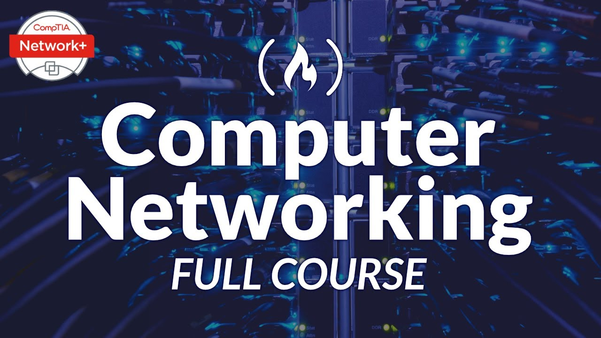
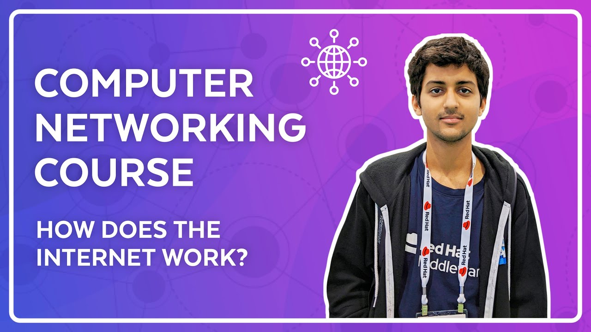
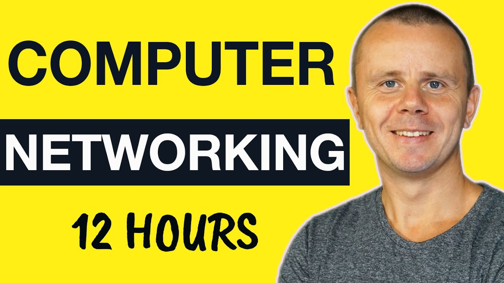
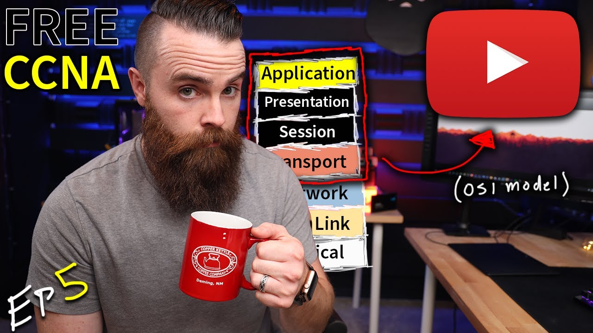

The "Computer Networking Course - Network Engineering [CompTIA Network+ Exam Prep]" is a comprehensive video resource designed to equip you with the knowledge and skills necessary to configure, manage, and troubleshoot computer networks, while also preparing you for the CompTIA Network+ exam.
Network Fundamentals: This section covers the foundational concepts of networking, including network devices (routers, switches, firewalls, etc.), network topologies (bus, star, mesh, etc.), and network protocols (TCP/IP, OSI model, etc.).

It dives deep into the Open Systems Interconnection (OSI) model, which is a conceptual framework for understanding how network communication works.
The video breaks down the OSI model into its seven layers: Physical, Data Link, Network, Transport, Session, Presentation, and Application.
NetworkChuck explains the functions of each layer with real-life examples to illustrate their practical applications in networking.
He also discusses how different protocols operate at each layer, such as TCP/IP, UDP, and HTTP.
Throughout the video, NetworkChuck emphasizes the importance of understanding the OSI model for troubleshooting network issues and designing efficient networks.

This video is a computer networking tutorial, and covers topics like what a computer network is, different types of networks, how devices communicate, TCP/IP and OSI models, Wireshark, routing, and traceroute.
It covers the basics of computer networks, including what they are and how they work.
It explains how devices communicate with each other on a network using protocols and data packets.
It discusses different types of networks, such as LANs, WANs, and VPNs.

This video is about the OSI model and how it works on YouTube. The speaker, NetworkChuck, starts the video with an introduction to the OSI model and the different layers. He then goes on to explain how the application layer, presentation layer, session layer, and transport layer are involved in watching a YouTube video.
The application layer is the top layer of the OSI model and it is responsible for providing network services to applications. In the case of watching a YouTube video, the application layer is responsible for starting the web browser and sending a request to YouTube for the video.